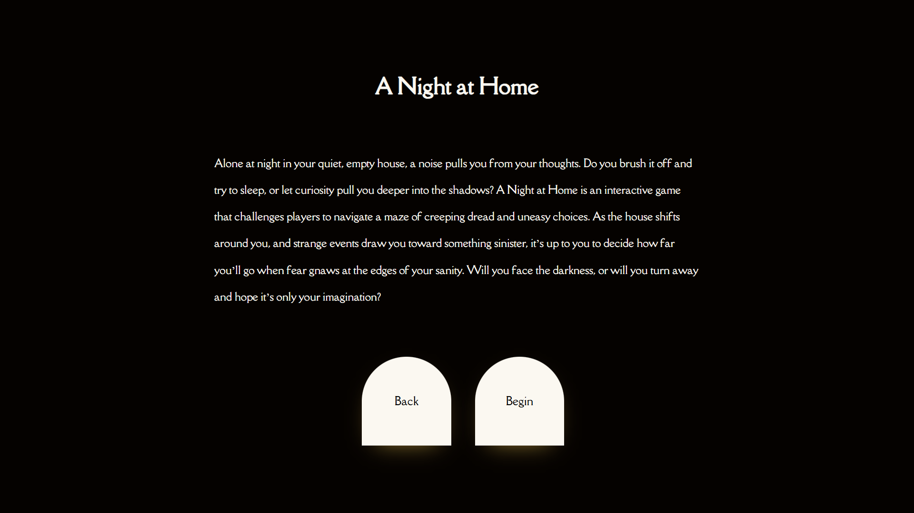

Experience the Game
Alone at night in your quiet, empty house, a noise pulls you from your thoughts. Do you brush it off and try to sleep, or let curiosity pull you deeper into the shadows?
Navigate a maze of creeping dread and uneasy choices in this interactive horror experience.
Branching Narrative
Multiple Endings
Atmospheric Horror
Player-Driven Story
Play A Night
at
Home

Evolution: Version 1.0 vs 2.0
Version 2.0 (Current)
- Custom three-page structure
- Enhanced navigation options
- Save functionality
- Custom visual elements
- Improved story pacing
Version 1.0 (Original)

- Standard Twine interface
- Basic navigation
- Core story elements
- Default Twine styling